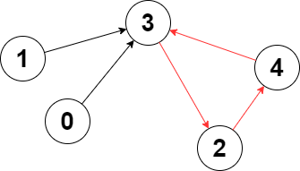
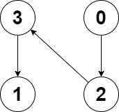

| Category | Difficulty | Likes | Dislikes |
|---|---|---|---|
| Algorithms | Hard | 2515 | 51 |
phonepe | amazon | juspay
You are given a directed graph of n nodes numbered from 0 to n - 1, where each node has at most one outgoing edge.
The graph is represented with a given 0-indexed array edges of size n, indicating that there is a directed edge from node i to node edges[i]. If there is no outgoing edge from node i, then edges[i] == -1.
Return the length of the longest cycle in the graph. If no cycle exists, return -1.
A cycle is a path that starts and ends at the same node.
Example 1:

Input: edges = [3,3,4,2,3]
Output: 3
Explanation: The longest cycle in the graph is the cycle: 2 -> 4 -> 3 -> 2.
The length of this cycle is 3, so 3 is returned.Example 2:

Input: edges = [2,-1,3,1]
Output: -1
Explanation: There are no cycles in this graph.
Constraints:
n == edges.length2 <= n <= 105-1 <= edges[i] < nedges[i] != i